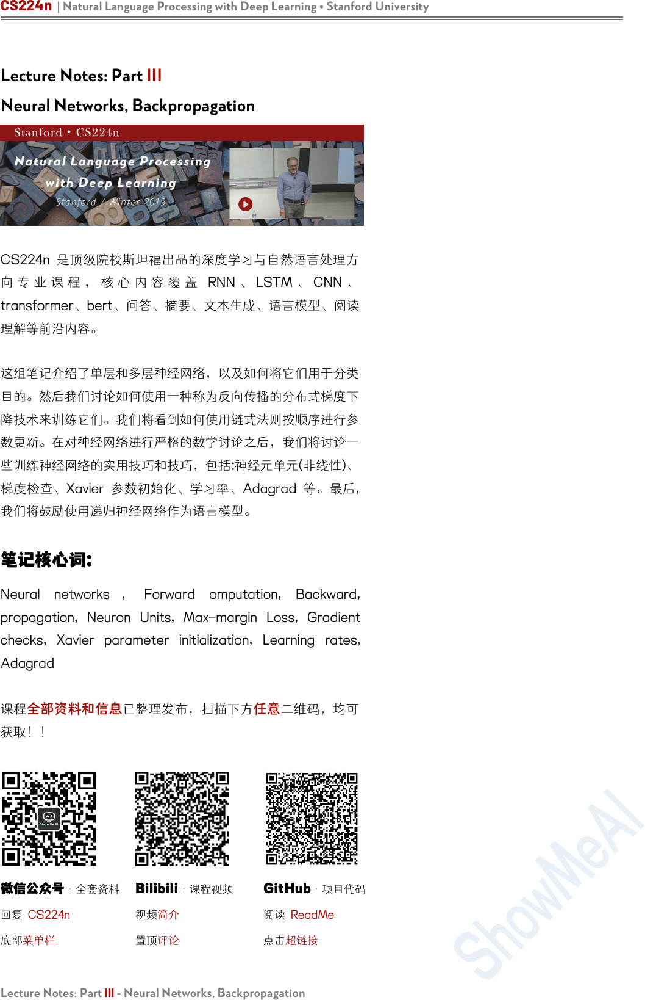
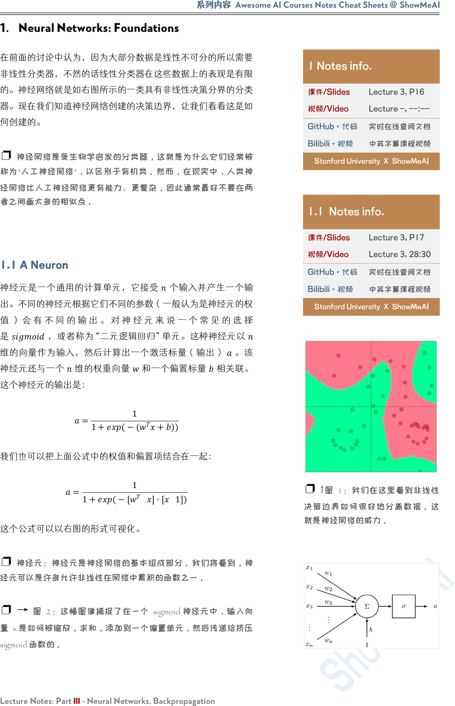
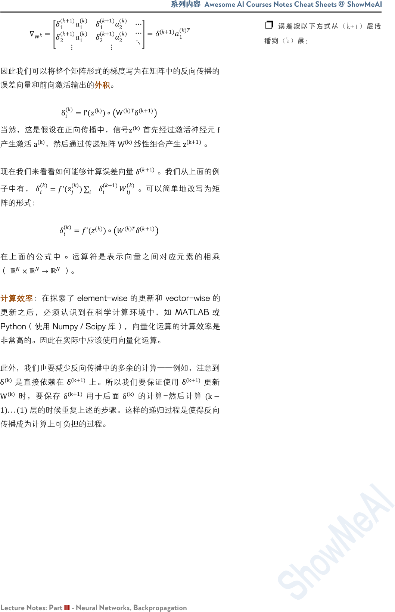
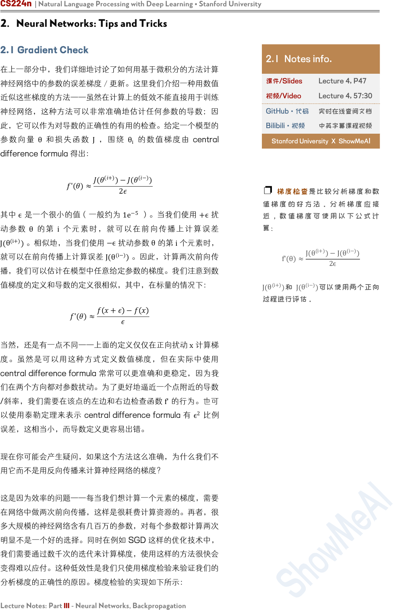
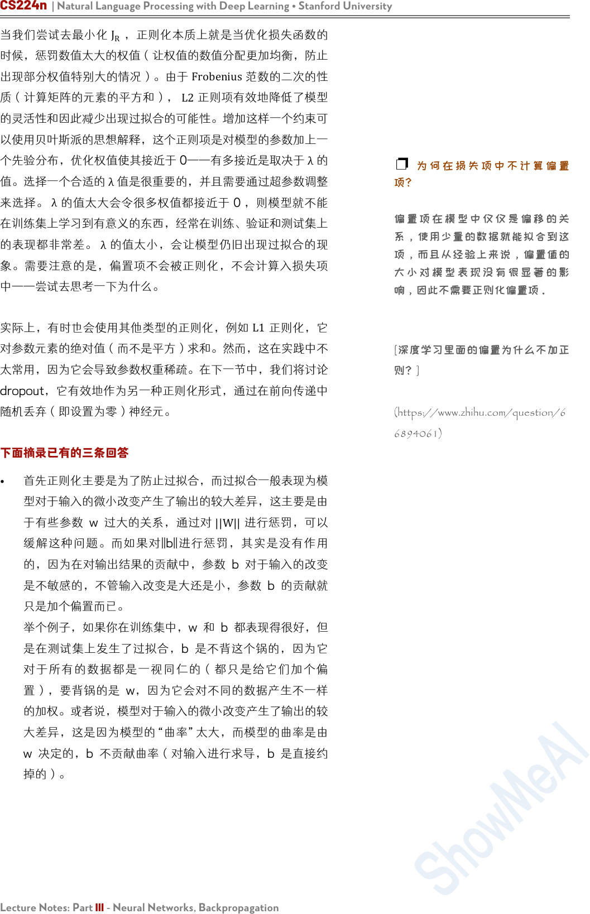
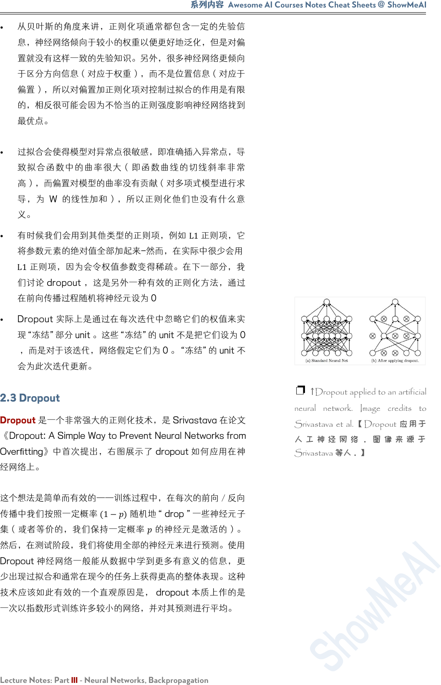
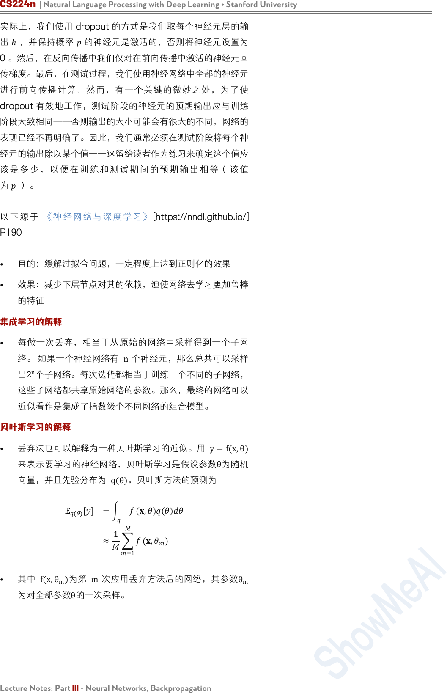
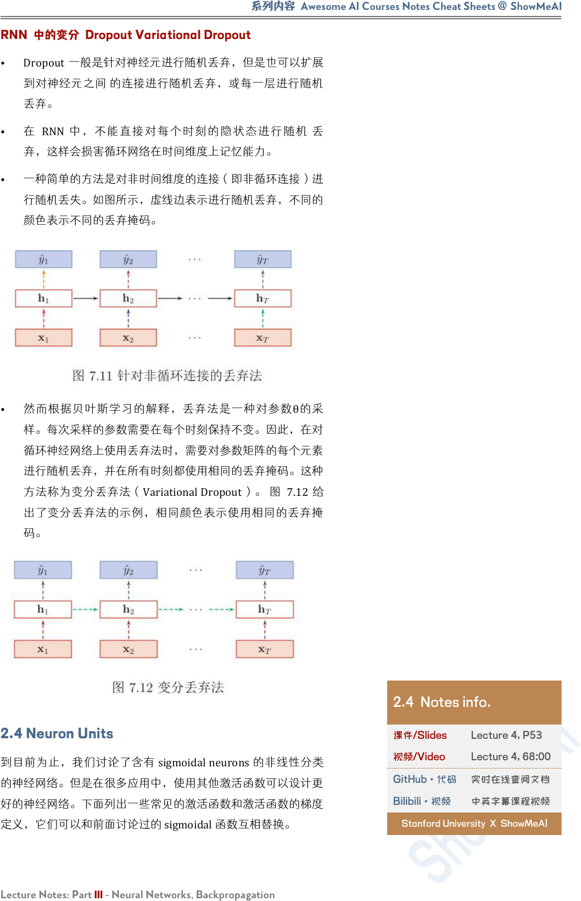
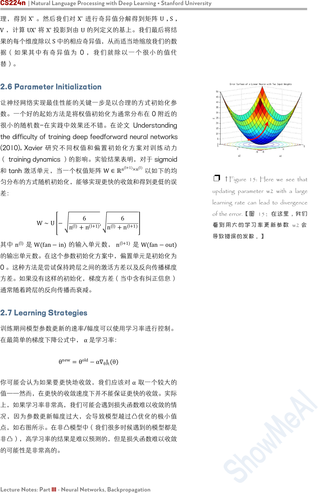
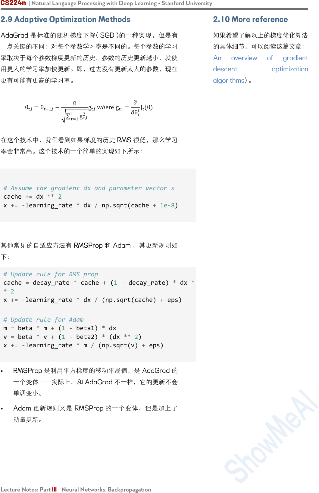

CS224n | Natural Language Processing with Deep Learning • Stanford University
Lecture Notes: Part III - Neural Networks, Backpropagation
Lecture Notes: Part III
Neural Networks, Backpropagation
CS224n 是顶级院校斯坦福出品的深度学习与自然语言处理方
向 专 业 课 程 ， 核 心 内 容 覆 盖 RNN 、 LSTM 、 CNN 、
transformer、bert、问答、摘要、文本生成、语言模型、阅读
理解等前沿内容。
这组笔记介绍了单层和多层神经网络，以及如何将它们用于分类
目的。然后我们讨论如何使用一种称为反向传播的分布式梯度下
降技术来训练它们。我们将看到如何使用链式法则按顺序进行参
数更新。在对神经网络进行严格的数学讨论之后，我们将讨论一
些训练神经网络的实用技巧和技巧，包括:神经元单元(非线性)、
梯度检查、Xavier 参数初始化、学习率、Adagrad 等。最后,
我们将鼓励使用递归神经网络作为语言模型。
笔记核心词：
Neural networks ， Forward omputation, Backward,
propagation, Neuron Units, Max-margin Loss, Gradient
checks, Xavier parameter initialization, Learning rates,
Adagrad
课程
全部资料和信息
已整理发布，扫描下方
任意
二维码，均可
获取！！
微信公众号
·全套资料
回复 CS224n
底部菜单栏
Bilibili
·课程视频
视频简介
置顶评论
GitHub
·项目代码
阅读 ReadMe
点击超链接

系列内容
Awesome AI Courses Notes Cheat Sheets
@
ShowMeAI
Lecture Notes: Part III - Neural Networks, Backpropagation
1. Neural Networks: Foundations
在前面的讨论中认为，因为大部分数据是线性不可分的所以需要
非线性分类器，不然的话线性分类器在这些数据上的表现是有限
的。神经网络就是如右图所示的一类具有非线性决策分界的分类
器。现在我们知道神经网络创建的决策边界，让我们看看这是如
何创建的。
❐ 神经网络是受生物学启发的分类器，这就是为什么它们经常被
称为“人工神经网络”，以区别于有机类。然而，在现实中，人类神
经网络比人工神经网络更有能力、更复杂，因此通常最好不要在两
者之间画太多的相似点。
1.1 A Neuron
神经元是一个通用的计算单元，它接受
个输入并产生一个输
出。不同的神经元根据它们不同的参数（一般认为是神经元的权
值 ） 会 有 不 同 的 输 出 。 对 神 经 元 来 说 一 个 常 见 的 选 择
是
，或者称为“二元逻辑回归”单元。这种神经元以
维的向量作为输入，然后计算出一个激活标量（输出）
。该
神经元还与一个
维的权重向量 和一个偏置标量
相关联。
这个神经元的输出是：
=
1
1+(−(
+))
我们也可以把上面公式中的权值和偏置项结合在一起：
=
1
1+(−[
]⋅[
1])
这个公式可以以右图的形式可视化。
❐ 神经元：神经元是神经网络的基本组成部分。我们将看到，神
经元可以是许多允许非线性在网络中累积的函数之一。
❐ → 图 2：这幅图像捕捉了在一个 sigmoid 神经元中，输入向
量 x 是如何被缩放，求和，添加到一个偏置单元，然后传递给挤压
sigmoid 函数的。
1 Notes info.
课件/Slides
Lecture 3, P16
视频/Video
Lecture -, --:--
GitHub·代码
实时在线查阅文档
Bilibili·视频
中英字幕课程视频
Stanford University X ShowMeA
I
1.1 Notes info.
课件/Slides
Lecture 3, P17
视频/Video
Lecture 3, 28:30
GitHub·代码
实时在线查阅文档
Bilibili·视频
中英字幕课程视频
Stanford University X ShowMeA
I
❐
↑
图 1：我们在这里看到非线性
决策边界如何很好地分离数据。这
就是神经网络的威力。

CS224n | Natural Language Processing with Deep Learning • Stanford University
Lecture Notes: Part III - Neural Networks, Backpropagation
1.2 A Single Layer of Neurons
我们将上述思想扩展到多个神经元，考虑输入
作为多个这样
的神经元的输入，如右图 3 所示。
如果我们定义不同的神经元的权值为 {w
(1)
,...,w
(m)
}、偏置为
{b
1
,...,b
m
}
和相对应的激活输出为
{a
1
,...,a
m
}
：
a
1
=
1
1+exp − w
(1)T
x+b
⋮
a
m
=
1
1+exp
− w
(m)T
x+b
让我们定义简化公式以便于更好地表达复杂的网络：
σ z =
1
1+exp
z
1
⋮
1
1+exp
z
m
b=
b
1
⋮
b
m
∈ℝ
m
W=
−w
(1)T
−
⋮
−w
(m)T
−
∈ℝ
m×n
我们现在可以将缩放和偏差的输出写成：
=+
激活函数 sigmoid 可以变为如下形式：
a
1
⋮
a
m
=σ z =σ Wx+b
那么这些激活的作用是什么呢？可以把这些激活看作是一些加权
特征组合存在的指标。然后我们可以使用这些激活的组合来执行
分类任务。
1.3 Feed-forward Computation
到 目 前 为 止 我 们 知 道 一 个 输 入 向 量
∈ℝ
可 以 经 过 一 层
单元的变换得到激活输出
∈ℝ
。但是这么做的直觉
是什么呢？让我们考虑一个 NLP 中的命名实体识别问题为例：
MuseumsinParisareamazing
1.2 Notes info.
课件/Slides
Lecture 3, P18
视频/Video
Lecture -, --:00
GitHub·代码
实时在线查阅文档
Bilibili·视频
中英字幕课程视频
Stanford University X ShowMeAI
❐
↑
图 3： 这幅图 像捕捉了多 个
sigmoid 单元如何堆叠在右侧，所有
这些单元都接收相同的输入 x。
1.3 Notes info.
课件/Slides
Lecture 3, P20
视频/Video
Lecture 3, 33:00
GitHub·代码
实时在线查阅文档
Bilibili·视频
中英字幕课程视频
Stanford University X ShowMeAI

系列内容
Awesome AI Courses Notes Cheat Sheets
@
ShowMeAI
Lecture Notes: Part III - Neural Networks, Backpropagation
这里我们想判断中心词
是不是以命名实体。在这种情况
下，我们很可能不仅想要捕捉窗口中单词的单词向量，还想要捕
捉单词之间的一些其他交互，以便进行分类。例如，可能只有
是第一个单词和 是第二个单词的时候，
才是
命名实体。这样的非线性决策通常不能被直接提供给 Softmax
函数的输入捕获，而是需要第 1.2 节中讨论的中间层进行评
分。因此，我们可以使用另一个矩阵
∈ℝ
×1
与激活输出计算
得到未归一化的得分用于分类任务：
s=U
T
a=U
T
f(Wx+b)
其中 是激活函数（例如 sigmoid 函数）。
1.4 Maximum Margin Objective Function
类似很多的机器学习模型，神经网络需要一个优化目标函数，一
个我们想要最小化或最大化的误差。这里我们讨论一个常用的误
差度量方法：maximum margin objective 最大间隔目标函数。
使用这个目标函数的背后的思想是保证对“真”标签数据的计算
得分要比“假”标签数据的计算得分要高。
回 到 前 面 的 例 子 ， 如 果 我 们 令 “ 真 ” 标 签 窗 口
的计算得分为 s ，令“假”标签
窗口
Not all museums in Paris
的计算得分为
（下标
表示
这个这个窗口 corrupt ）
然后，我们对目标函数最大化
(−
)
或者最小化
(
−)
。然
而，我们修改目标函数来保证误差仅在
>⇒(
−)>0才
进行计算。这样做的直觉是，我们只关心“正确”数据点的得分
高于“错误”数据点，其余的都不重要。因此，当
>
则误差
为
(
−)
，否则为 0 。因此，我们的优化的目标函数现在为：
minimize J=max (s
c
−s,0)
然而，上面的优化目标函数是有风险的，因为它不能创造一个安
全的间隔。我们希望“真”数据要比“假”数据的得分大于某个正
的间隔
。换而言之，我们想要误差在
(−
<)
就开始计
算，而不是当 (−
<0)时就计算。因此，我们修改优化目标
函数为：
minimize J=max (Δ+s
c
−s,0)
我们可以把这个间隔缩放使得
=1
，让其他参数在优化过程中
自动进行调整，并且不会影响模型的表现。如果想更多地了解这
❐ 维度分析：
如果我们使用 4 维的词向量来表示
每个单词并使用 5 个词的窗口，则
输入是
x∈ℝ
20
。
如果我们在隐藏层使用 8 个 sigmoid
单元和从激活函数中生成一个分数
输出，其中 W∈
ℝ
8×20
，
b∈ℝ
8
，
U∈ℝ
8×1
，
s∈ℝ
。
1.4 Notes info.
课件/Slides
Lecture 3, P33
视频/Video
Lecture -, --:00
GitHub·代码
实时在线查阅文档
Bilibili·视频
中英字幕课程视频
Stanford University X ShowMeAI
❐ ↑图 4：这个图像捕捉了一个简
单的前馈网络如何计算它的输出。
❐ 最大边际目标函数通常与支持
向量机一起使用.

CS224n | Natural Language Processing with Deep Learning • Stanford University
Lecture Notes: Part III - Neural Networks, Backpropagation
方面，可以去读一下
中的函数间隔和几何间隔中的相关内
容。最后，我们定义在所有训练窗口上的优化目标函数为：
minimize J=max (1+s
c
−s,0)
按照上面的公式有，
=
(
+)
和
=
(+)
。
1.5 Training with Backpropagation – Elemental
在这部分我们讨论当 1.4 节中讨论的损失函数 为正时，模型
中不同参数时是如何训练的。如果损失为 0 时，那么不需要再
更新参数。我们一般使用梯度下降（或者像 SGD 这样的变体）
来更新参数，所以要知道在更新公式中需要的任意参数的梯度信
息：
(+1)
=
()
−
()
反向传播是一种利用微分链式法则来计算模型上任意参数的损失
梯度的方法。为了更进一步理解反向传播，我们先看右图的一个
简单的网络。
这里我们使用只有单个隐藏层和单个输出单元的神经网络。现在
让我们先建立一些符号定义：
•
x
i
是神经网络的输入
•
s
是神经网络的输出
• 每层（包括输入和输出层）的神经元都接收一个输入和生成
一个输出。第
k
层的第
j
个神经元接收标量输入
z
j
(k)
和生成
一个标量激活输出
a
j
(k)
•
我们把 z
j
(k)
计算出的反向传播误差定义为 δ
j
(k)
• 第
1
层是输入层，而不是第
1
个隐藏层。对输入层而言，
x
j
(k)
=z
j
(k)
=
a
j
(k)
•
W
(k)
是将第 k 层的输出映射到第
k+1
层的输入的转移矩
阵，因此将这个新的符号用在 Section 1.3中的例子
W
(1)
=
W和 W
(2)
=U。
现在开始反向传播：假设损失函数 J=(1+
s
c
−s)为正值，我
们想更新参数
W
14
(1)
，我们看到
W
14
(1)
只参与了 z
1
(2)
和
a
1
(2)
的计
算。这点对于理解反向传播是非常重要的——反向传播的梯度只
受它们所贡献的值的影响。
a
1
(2)
在随后的前向计算中和
W
1
(2)
相
乘计算得分。我们可以从最大间隔损失看到：
Notes info.
课件/Slides
Lecture 4, P12
视频/Video
Lecture 3, 57:00
GitHub·代码
实时在线查阅文档
Bilibili·视频
中英字幕课程视频
Stanford University X ShowMeAI
❐ ↑图 5：这是一个 4-2-1 神经网
络，其中 k 层的神经元 j 接收输入
()
，并产生激活输出
()
。

系列内容
Awesome AI Courses Notes Cheat Sheets
@
ShowMeAI
Lecture Notes: Part III - Neural Networks, Backpropagation
=−
=−1
为了简化我们只分析
(1)
。所以，
(1)
=
(2)
(2)
(1)
=
(2)
(2)
(1)
=
(2)
(2)
(1)
⟹
(2)
(2)
(1)
=
(2)
(2)
(2)
(2)
(1)
=
(2)
(2)
(2)
(2)
(1)
=
(2)
'
(2)
(2)
(1)
=
(2)
'
(2)
(1)
(1)
+
1
(1)
1
(1)
+
2
(1)
2
(1)
+
3
(1)
3
(1)
+
4
(1)
4
(1)
=
(2)
'
(2)
(1)
(1)
+
(1)
(1)
=
(2)
'
(2)
(1)
=
(2)
(1)
其中，
a
(1)
指输入层的输入。我们可以看到梯度计算最后可以
简化为 δ
i
(2)
⋅
a
j
(1)
，其中 δ
i
(2)
本质上是第
2
层中第 i个神经元反
向传播的误差。
a
j
(1)
与
W
ij
相乘的结果，输入第
2
层中第 i个神
经元中。
我们以右图为例，让我们从“误差共享/分配”的来阐释一下反向
传播，现在我们要更新
W
14
(1)
：
1. 我们从
1
(3)
的 1 的误差信号开始反向传播。
2. 然后我们把误差与将
1
(3)
映射到
1
(3)
的神经元的局部梯度
相乘。在这个例子中梯度正好等于 1 ，则误差仍然为 1 。
所以有
1
(3)
=1。
3. 这里误差信号 1 已经到达
1
(3)
。我们现在需要分配误差信
号使得误差的“公平共享”到达
1
(2)
。
4. 现在在
1
(2)
的误差为
1
(3)
×
1
(2)
=
1
(2)
（在
1
(3)
的误差信
号为
1
(3)
）。因此在
1
(2)
的误差为
1
(2)
。
5. 与第 2 步的做法相同，我们在将
1
(2)
映射到
1
(2)
的神经元
上移动误差，将
1
(2)
与局部梯度相乘，这里的局部梯度为
'(
1
(2)
)
。
6. 因此在
1
(2)
的误差是 '(
1
(2)
)
1
(2)
，我们将其定义为
1
(2)
。
7. 最后，我们通过将上面的误差与参与前向计算的
4
(1)
相
乘，把误差的“误差共享”分配到
14
(1)
。
❐
↑
图 6：此子网显示了更新
W
ij
(1)
所需的网络的相关部分。

CS224n | Natural Language Processing with Deep Learning • Stanford University
Lecture Notes: Part III - Neural Networks, Backpropagation
8. 所以，对于
14
(1)
的梯度损失可以计算为
4
(1)
'(
1
(2)
)
1
(2)
。
注意我们使用这个方法得到的结果是和之前微分的方法的结果是
完全一样的。因此，计算网络中的相应参数的梯度误差既可以使
用链式法则也可以使用误差共享和分配的方法——这两个方法能
得到相同结果，但是多种方式考虑它们可能是有帮助的。
偏置更新：偏置项（例如
b
1
(1)
）和其他权值在数学形式是等价
的，只是在计算下一层神经 z
1
(2)
元输入时相乘的值是常量 1 。
因此在第 k 层的第 i 个神经元的偏置的梯度时 δ
i
(k)
。例如在上面
的例子中，我们更新的是 b
1
(1)
而不是 W
14
(1)
，那么这个梯度为
f'(z
1
(2)
)
W
1
(2)
。
从 δ
(k)
到 δ
(k−1)
反向传播的一般步骤：
• 我们有从
z
i
(k)
向后传播的误差
δ
i
(k)
，如图 7所示
• 我们通过把 δ
i
(k)
与路径上的权值
W
ij
(k−1)
相乘，将这个误差
反向传播到
a
j
(k−1)
。
• 因此在
a
j
(k−1)
接收的误差是
δ
i
(k)
W
ij
(k−1)
。
•
然而，
a
j
(k−1)
在前向计算可能出右图的情况，会参与下一层
中的多个神经元的计算。那么第 k层的第
m
个神经元的误
差也要使用上一步方法将误差反向传播到
a
j
(k−1)
上。
•
因此现在在
a
j
(k−1)
接收的误差是 δ
i
(k)
W
ij
(k−1)
+δ
m
(k)
W
mj
(k−1)
。
• 实际上，我们可以把上面误差和简化为
i
δ
i
(k)
W
ij
(k−1)
。
• 现在我们有在
a
j
(k−1)
正确的误差，然后将其与局 部梯度
f'(z
j
(k−1)
)
相乘，把误差信息反向传到第
k−1
层的第
j
个神
经元上。
•
因此到达 z
j
(k−1)
的误差为 f'(z
j
(k−1)
)
i
δ
i
(k)
W
ij
(k−1)
。
1.6 Training with Backpropagation – Vectorized
到目前为止，我们讨论了对模型中的给定参数计算梯度的方法。
这里会一般泛化上面的方法，让我们可以直接一次过更新权值矩
阵和偏置向量。注意这只是对上面模型的简单地扩展，这将有助
于更好理解在矩阵-向量级别上进行误差反向传播的方法。
对更定的参数
W
ij
(k)
，我们知道它的误差梯度是
δ
j
(k+1)
⋅a
j
(k)
。
其中
W
(k)
是将
a
(k)
映射到 z
(k+1)
的矩阵。因此我们可以确定整
个矩阵
W
(k)
的梯度误差为：
❐ ↑图 7：从
δ
(k)
到
δ
(k−1)
的传播
误差
❐ ↑图 8：从
δ
(k)
到
δ
(k−1)
的传播
误差
1.6 Notes info.
课件/Slides
Lecture -, P-
视频/Video
Lecture3, 64:00
GitHub·代码
实时在线查阅文档
Bilibili·视频
中英字幕课程视频
Stanford University X ShowMeA
I

系列内容
Awesome AI Courses Notes Cheat Sheets
@
ShowMeAI
Lecture Notes: Part III - Neural Networks, Backpropagation
∇
W
=
1
(+1)
1
()
2
(+1)
1
()
⋮
1
(+1)
2
()
2
(+1)
2
()
⋮
⋯
⋯
⋱
=
(+1)
1
()
因此我们可以将整个矩阵形式的梯度写为在矩阵中的反向传播的
误差向量和前向激活输出的外积。
δ
i
(k)
=f'(z
(k)
)∘
W
(k)T
δ
(k+1)
当然，这是假设在正向传播中，信号z
(k)
首先经过激活神经元 f
产生激活
a
(k)
，然后通过传递矩阵
W
(k)
线性组合产生 z
(k+1)
。
现在我们来看看如何能够计算误差向量
(+1)
。我们从上面的例
子中有，
()
='(
()
)
(+1)
()
。可以简单地改写为矩
阵的形式：
()
='(
()
)∘
()
(+1)
在 上 面的公式中
∘
运 算 符是表示向 量之间对应元素的相乘
（
ℝ
×
ℝ
→
ℝ
）。
计算效率：在探索了 element-wise 的更新和 vector-wise 的
更新之后，必须 认识 到在科学计算环 境中，如 MATLAB 或
Python（使用 Numpy / Scipy 库），向量化运算的计算效率是
非常高的。因此在实际中应该使用向量化运算。
此外，我们也要减少反向传播中的多余的计算——例如，注意到
δ
(k)
是直接依赖在
δ
(k+1)
上。所以我们要保证使用
δ
(k+1)
更新
W
(k)
时，要保存 δ
(k+1)
用于后面 δ
(k)
的计算-然后计算 (k−
1)...(1)
层的时候重复上述的步骤。这样的递归过程是使得反向
传播成为计算上可负担的过程。
❐ 误差按以下方式从（k+1）层传
播到（k）层：

CS224n | Natural Language Processing with Deep Learning • Stanford University
Lecture Notes: Part III - Neural Networks, Backpropagation
2. Neural Networks: Tips and Tricks
2.1 Gradient Check
在上一部分中，我们详细地讨论了如何用基于微积分的方法计算
神经网络中的参数的误差梯度／更新。这里我们介绍一种用数值
近似这些梯度的方法——虽然在计算上的低效不能直接用于训练
神经网络，这种方法可以非常准确地估计任何参数的导数；因
此，它可以作为对导数的正确性的有用的检查。给定一个模型的
参 数 向 量
θ
和 损 失 函 数
J
， 围 绕
θ
i
的 数 值 梯 度 由 central
difference formula 得出：
'()≈
(
(+)
)−(
(−)
)
2
其中
ϵ
是一个很小的值（一般约为 1
e
−5
）。当我们使用
+ϵ
扰
动参数
θ
的第
i
个元素时，就 可 以 在 前 向传播上计算 误差
J(
θ
(i+)
)。相似地，当我们使用
−ϵ
扰动参数
θ
的第 i个元素时，
就可以在前向传播上计算误差 J(θ
(i−)
)。因此，计算两次前向传
播，我们可以估计在模型中任意给定参数的梯度。我们注意到数
值梯度的定义和导数的定义很相似，其中，在标量的情况下：
'()≈
+ −
当然，还是有一点不同——上面的定义仅仅在正向扰动
x
计算梯
度。虽然是可以用这种方式定义数值梯度，但在实际中使用
central difference formula 常常可以更准确和更稳定，因为我
们在两个方向都对参数扰动。为了更好地逼近一个点附近的导数
/斜率，我们需要在该点的左边和右边检查函数 f'的行为。也可
以使用泰勒定理来表示 central difference formula 有
ϵ
2
比例
误差，这相当小，而导数定义更容易出错。
现在你可能会产生疑问，如果这个方法这么准确，为什么我们不
用它而不是用反向传播来计算神经网络的梯度？
这是因为效率的问题——每当我们想计算一个元素的梯度，需要
在网络中做两次前向传播，这样是很耗费计算资源的。再者，很
多大规模的神经网络含有几百万的参数，对每个参数都计算两次
明显不是一个好的选择。同时在例如 SGD 这样的优化技术中，
我们需要通过数千次的迭代来计算梯度，使用这样的方法很快会
变得难以应付。这种低效性是我们只使用梯度检验来验证我们的
分析梯度的正确性的原因。梯度检验的实现如下所示：
2.1 Notes info.
课件/Slides
Lecture 4, P47
视频/Video
Lecture 4, 57:30
GitHub·代码
实时在线查阅文档
Bilibili·视频
中英字幕课程视频
Stanford University X ShowMeA
I
❐ 梯度检查是比较分析梯度和数
值 梯 度 的 好 方 法 。 分 析 梯 度 应 接
近 ， 数 值 梯 度 可 使 用 以 下 公 式 计
算：
f'(θ)≈
J(θ
(i+)
)−J(θ
(i−)
)
2ϵ
J(
θ
(i+)
)和 J(
θ
(i−)
)可以使用两个正向
过程进行评估。

系列内容
Awesome AI Courses Notes Cheat Sheets
@
ShowMeAI
Lecture Notes: Part III - Neural Networks, Backpropagation
def eval_numerical_gradient(f, x):
"""
a naive implementation of numerical gradient of f at x
- f should be a function that takes a single argument
- x is the point (numpy array) to evaluate the gradient at
"""
f(x) = f(x) # evaluate function value at original point
grad = np.zeros(x.shape)
h = 0.00001
# iterate over all indexes in x
it = np.nditer(x, flags=['
multi_index
',op_flags=['
readwrite
'])
while not it.finished:
# evaluate function at x+h
ix = it.multi_index
old_value = x[ix]
x[ix] = old_value + h # increment by h
fxh_left = f(x) # evaluate f(x + h)
x[ix] = old_value - h # decrement by h
fxh_right = f(x) # evaluate f(x - h)
# restore to previous value (very important!)
x[ix] = old_value
# compute the partial derivative
# the slope
grad[ix] = (fxh_left - fxh_right) / (2 * h)
it.iternext() # step to next dimension
return grad
2.2 Regularization
和很多机器学习的模型一样，神经网络很容易过拟合，这令到模
型在训练集上能获得近乎完美的表现，但是却不能泛化到测试集
上。一个常见的用于解决过拟合（“高方差问题”）的方法是使
用
L2
正则化。我们只需要在损失函数
J
上增加一个正则项，现
在的损失函数如下：
J
R
=J+λ
i=1
L
||W
(i)
||
F
在上面的公式中， ||
W
(i)
||
F
是矩阵
W
(i)
（在神经网络中的第 i个
权值矩阵）的
Frobenius
范数,
λ
是超参数控制损失函数中的权
值的大小。
||U||
F
=
i
l
U
il
2
Notes info.
课件/Slides
Lecture 4, P50
视频/Video
Lecture 4, 61:30
GitHub·代码
实时在线查阅文档
Bilibili·视频
中英字幕课程视频
Stanford University X ShowMeAI
❐ 矩阵
U
的
Frobenius
范数的定义

CS224n | Natural Language Processing with Deep Learning • Stanford University
Lecture Notes: Part III - Neural Networks, Backpropagation
当我们尝试去最小化
J
R
，正则化本质上就是当优化损失函数的
时候，惩罚数值太大的权值（让权值的数值分配更加均衡，防止
出现部分权值特别大的情况）。由于
Frobenius
范数的二次的性
质（计算矩阵的元素的平方和），
L2
正则项有效地降低了模型
的灵活性和因此减少出现过拟合的可能性。增加这样一个约束可
以使用贝叶斯派的思想解释，这个正则项是对模型的参数加上一
个先验分布，优化权值使其接近于 0——有多接近是取决于 λ的
值。选择一个合适的 λ值是很重要的，并且需要通过超参数调整
来选择。
λ
的值太大会令很多权值都接近于 0 ，则模型就不能
在训练集上学习到有意义的东西，经常在训练、验证和测试集上
的表现都非常差。 λ的值太小，会让模型仍旧出现过拟合的现
象。需要注意的是，偏置项不会被正则化，不会计算入损失项
中——尝试去思考一下为什么。
实际上，有时也会使用其他类型的正则化，例如
L1
正则化，它
对参数元素的绝对值（而不是平方）求和。然而，这在实践中不
太常用，因为它会导致参数权重稀疏。在下一节中，我们将讨论
dropout，它有效地作为另一种正则化形式，通过在前向传递中
随机丢弃（即设置为零）神经元。
下面摘录已有的三条回答
• 首先正则化主要是为了防止过拟合，而过拟合一般表现为模
型对于输入的微小改变产生了输出的较大差异，这主要是由
于有些参数 w 过大的关系，通过对 ||W||进行惩罚，可以
缓解这种问题。而如果对||b||进行惩罚，其实是没有作用
的，因为在对输出结果的贡献中，参数 b 对于输入的改变
是不敏感的，不管输入改变是大还是小，参数 b 的贡献就
只是加个偏置而已。
举个例子，如果你在训练集中，w 和 b 都表现得很好，但
是在测试集上发生了过拟合，b 是不背这个锅的，因为它
对于所有的数据都是一视同仁的（都只是给它们加个偏
置），要背锅的是 w，因为它会对不同的数据产生不一样
的加权。或者说，模型对于输入的微小改变产生了输出的较
大差异，这是因为模型的“曲率”太大，而模型的曲率是由
w 决定的，b 不贡献曲率（对输入进行求导，b 是直接约
掉的）。
❐ 为 何 在 损 失 项 中 不 计 算 偏 置
项？
偏 置 项 在 模 型 中 仅 仅 是 偏 移 的 关
系，使用少量的数据就能拟合到这
项，而且从经验上来说，偏置值的
大 小 对 模 型 表 现 没 有 很 显 著 的 影
响，因此不需要正则化偏置项。
[深度学习里面的偏置为什么不加正
则？]
(https://www.zhihu.com/question/6
6894061)

系列内容
Awesome AI Courses Notes Cheat Sheets
@
ShowMeAI
Lecture Notes: Part III - Neural Networks, Backpropagation
•
从贝叶斯的角度来讲，正则化项通常都包含一定的先验信
息，神经网络倾向于较小的权重以便更好地泛化，但是对偏
置就没有这样一致的先验知识。另外，很多神经网络更倾向
于区分方向信息（对应于权重），而不是位置信息（对应于
偏置），所以对偏置加正则化项对控制过拟合的作用是有限
的，相反很可能会因为不恰当的正则强度影响神经网络找到
最优点。
• 过拟合会使得模型对异常点很敏感，即准确插入异常点，导
致拟合函数中的曲率很大（即函数曲线的切线斜率非常
高），而偏置对模型的曲率没有贡献（对多项式模型进行求
导，为 W 的线性加和），所以正则化他们也没有什么意
义。
• 有时候我们会用到其他类型的正则项，例如
L1
正则项，它
将参数元素的绝对值全部加起来-然而，在实际中很少会用
L1
正则项，因为会令权值参数变得稀疏。在下一部分，我
们讨论 dropout ，这是另外一种有效的正则化方法，通过
在前向传播过程随机将神经元设为 0
• Dropout 实际上是通过在每次迭代中忽略它们的权值来实
现“冻结”部分 unit 。这些“冻结”的 unit 不是把它们设为 0
，而是对于该迭代，网络假定它们为 0 。“冻结”的 unit 不
会为此次迭代更新。
2.3 Dropout
Dropout 是一个非常强大的正则化技术，是 Srivastava 在论文
《Dropout: A Simple Way to Prevent Neural Networks from
Overfitting》中首次提出，右图展示了 dropout 如何应用在神
经网络上。
这个想法是简单而有效的——训练过程中，在每次的前向／反向
传播中我们按照一定概率
(1−)
随机地“ drop ”一些神经元子
集（或者等价的，我们保持一定概率
的神经元是激活的）。
然后，在测试阶段，我们将使用全部的神经元来进行预测。使用
Dropout 神经网络一般能从数据中学到更多有意义的信息，更
少出现过拟合和通常在现今的任务上获得更高的整体表现。这种
技术应该如此有效的一个直观原因是， dropout 本质上作的是
一次以指数形式训练许多较小的网络，并对其预测进行平均。
❐ ↑Dropout applied to an artificial
neural network. Image credits to
Srivastava et al.【 Dropout 应 用 于
人 工 神 经 网 络 。 图 像 来 源 于
Srivastava 等人。】

CS224n | Natural Language Processing with Deep Learning • Stanford University
Lecture Notes: Part III - Neural Networks, Backpropagation
实际上，我们使用 dropout 的方式是我们取每个神经元层的输
出
ℎ
，并保持概率
的神经元是激活的，否则将神经元设置为
0 。然后，在反向传播中我们仅对在前向传播中激活的神经元回
传梯度。最后，在测试过程，我们使用神经网络中全部的神经元
进行前向传播计算。然而，有一个关键的微妙之处，为了使
dropout 有效地工作，测试阶段的神经元的预期输出应与训练
阶段大致相同——否则输出的大小可能会有很大的不同，网络的
表现已经不再明确了。因此，我们通常必须在测试阶段将每个神
经元的输出除以某个值——这留给读者作为练习来确定这个值应
该 是 多 少 ，以 便 在 训 练 和 测 试 期 间 的预期 输 出 相等 （ 该 值
为 ） 。
以 下 源 于 《 神 经 网 络 与 深 度 学习》 [https://nndl.github.io/]
P190
• 目的：缓解过拟合问题，一定程度上达到正则化的效果
• 效果：减少下层节点对其的依赖，迫使网络去学习更加鲁棒
的特征
集成学习的解释
•
每做一次丢弃，相当于从原始的网络中采样得到一个子网
络。 如果一个神经网络有
n
个神经元，那么总共可以采样
出
2
n
个子网络。每次迭代都相当于训练一个不同的子网络，
这些子网络都共享原始网络的参数。那么，最终的网络可以
近似看作是集成了指数级个不同网络的组合模型。
贝叶斯学习的解释
• 丢弃法也可以解释为一种贝叶斯学习的近似。用
y=f(x,θ)
来表示要学习的神经网络，贝叶斯学习是假设参数
θ
为随机
向量，并且先验分布为
q(θ)
，贝叶斯方法的预测为
()
[] =
(,)()
≈
1
=1
,
• 其中 f(x,
θ
m
)为第 m次应用丢弃方法后的网络，其参数
θ
m
为对全部参数
θ
的一次采样。

系列内容
Awesome AI Courses Notes Cheat Sheets
@
ShowMeAI
Lecture Notes: Part III - Neural Networks, Backpropagation
RNN 中的变分 Dropout Variational Dropout
• Dropout一般是针对神经元进行随机丢弃，但是也可以扩展
到对神经元之间 的连接进行随机丢弃，或每一层进行随机
丢弃。
•
在 RNN 中，不能直接对每个时刻的隐状态进 行随机 丢
弃，这样会损害循环网络在时间维度上记忆能力。
• 一种简单的方法是对非时间维度的连接（即非循环连接）进
行随机丢失。如图所示，虚线边表示进行随机丢弃，不同的
颜色表示不同的丢弃掩码。
• 然而根据贝叶斯学习的解释，丢弃法是一种对参数
θ
的采
样。每次采样的参数需要在每个时刻保持不变。因此，在对
循环神经网络上使用丢弃法时，需要对参数矩阵的每个元素
进行随机丢弃，并在所有时刻都使用相同的丢弃掩码。这种
方法称为变分丢弃法（VariationalDropout）。 图 7.12给
出了变分丢弃法的示例，相同颜色表示使用相同的丢弃掩
码。
2.4 Neuron Units
到目前为止，我们讨论了含有 sigmoidalneurons的非线性分类
的神经网络。但是在很多应用中，使用其他激活函数可以设计更
好的神经网络。下面列出一些常见的激活函数和激活函数的梯度
定义，它们可以和前面讨论过的 sigmoidal函数互相替换。
2.4 Notes info.
课件/Slides
Lecture 4, P53
视频/Video
Lecture 4, 68:00
GitHub·代码
实时在线查阅文档
Bilibili·视频
中英字幕课程视频
Stanford University X ShowMeA
I

CS224n | Natural Language Processing with Deep Learning • Stanford University
Lecture Notes: Part III - Neural Networks, Backpropagation
Sigmoid：这是我们讨论过的常用选择，激活函数 σ为：
σ(z)=
1
1+exp(−z)
其中
σ(z)∈(0,1)
σ(z)的梯度为
σ
'
(z)=
−exp(−z)
1+exp(−z)
=σ(z)
1−σ(z)
Tanh：
tanℎ
函数是
sigmoid
函数之外的另一个选择，在实际中
它能更快地收敛。
tanℎ
和
sigmoid
的主要不同在于
tanℎ
的输出
范围在 -1 到 1 ，而
sigmoid
的输出范围在 0 到 1 。
ℎ()
()−(−)
()+(−)
=2(2)
其中 ℎ()∈(−1,1)。
ℎ()
的梯度为：
ℎ
'
()=
()−(−)
()+(−)
2
=1−
ℎ
2
()
Hard tanh：有时候 ℎard tanℎ函数有时比
tanℎ
函数的选择更
为优先，因为它的计算量更小。然而当
z
的值大于
1
时，函数的
数值会饱和（如右图所示会恒等于 1）。ℎard tanℎ 激活函数
为：
ℎardtanℎ(z)=
−1 :z<1
z
:−1≤z≤1
1 :z>1
ℎard tanℎ
这个函数的微分也可以用分段函数的形式表示：
ℎardtanℎ(z) =
1 :−1≤z≤1
0 :otℎerwise
Soft sign： soft sign函数是另外一种非线性激活函数，它可以
是
tanℎ
的另外一种选择，因为它和 ℎard clipped functions一样
不会过早地饱和：
softsign(z)=
z
1+|z|
soft sign
函数的微分表达式为：
soft sign
'
z =
sgn(z)
1+z
2
其中
sgn
是符号函数，根据
z
的符号返回 1或者 -1。
rect'(z) =
1 :z>1
0 :otℎerwise
❐ ↑ Figure 9: The response of a
sigmoid nonlinearity 【 图 9:sigmoid
非线性的响应】
❐
↑
Figure 10: The response of a
tanh nonlinearity 【 图 10:tanh 非 线
性的响应】
❐ ↑Figure 11: The response of a
hard tanh nonlinearity【图 11：hard
tanh 非线性的响应】
❐ ↑Figure 12: The response of a
soft sign nonlinearity【图 12：软符
号非线性的响应】

系列内容
Awesome AI Courses Notes Cheat Sheets
@
ShowMeAI
Lecture Notes: Part III - Neural Networks, Backpropagation
ReLU：
ReLU
（ Rectified Linear Unit）函数是激活函数中的
一个常见的选择，当 z的值特别大的时候它也不会饱和。在计算
机视觉应用中取得了很大的成功：
rect(z)=max(z,0)
ReLU
函数的微分是一个分段函数：
rect'(z) =
1 :z>1
0 :otℎerwise
Leaky ReLU：传统的
ReLU
单元当 z的值小于 0时，是不会反
向传播误差
leaky ReLU
改善了这一点，当
z
的值小于 0时，仍
然会有一个很小的误差反向传播回去。
leaky
z
=max z,k∙z
其中
0<k<1
leaky ReLU函数的微分是一个分段函数：
leaky'(z) =
1 :z>0
k :otℎerwise
2.5 Data Preprocessing
与机器学习模型的一般情况一样，确保模型在当前任务上获得合
理性能的一个关键步骤是对数据执行基本的预处理。下面概述了
一些常见的技术。
Mean Subtraction
给定一组输入数据
X
，一般把
X
中的值减去
X
的平均特征向量
来使数据零中心化。在实践中很重要的一点是，只计算训练集的
平均值，而且在训练集，验证集和测试集都是减去同一平均值。
Normalization
另外一个常见的技术（虽然没有
mean Subtraction
常用）是将
每个输入特征维度缩小，让每个输入特征维度具有相似的幅度范
围。这是很有用的，因此不同的输入特征是用不同“单位”度
量，但是最初的时候我们经常认为所有的特征同样重要。实现方
法是将特征除以它们各自在训练集中计算的标准差。
Whitening
相比上述的两个方法， whitening 没有那么常用，它本质上是数
据经过转换后，特征之间相关性较低，所有特征具有相同的方差
（协方差阵为 1 ）。首先对数据进行 Mean Subtraction 处
❐ ↑Figure 13: The response of a
ReLU nonlinearity 【 图 13:ReLU
非线性的响应】
❐ ↑Figure 14: The response of a
leaky ReLU nonlinearity【 图 14：
泄漏 ReLU 非线性的响应】

CS224n | Natural Language Processing with Deep Learning • Stanford University
Lecture Notes: Part III - Neural Networks, Backpropagation
理，得到
X'
。然后我们对
X'
进行奇异值分解得到矩阵
U
,
S
,
V
，计算
UX'
将
X'
投影到由
U
的列定义的基上。我们最后将结
果的每个维度除以
S
中的相应奇异值，从而适当地缩放我们的数
据 （如果其中有奇 异 值 为 0 ，我们就除 以一个很小 的 值 代
替）。
2.6 Parameter Initialization
让神经网络实现最佳性能的关键一步是以合理的方式初始化参
数。一个好的起始方法是将权值初始化为通常分布在 0 附近的
很小的随机数-在实践中效果还不错。在论文 Understanding
the difficulty of training deep feedforward neural networks
(2010), Xavier 研究不 同权值 和 偏置初始 化方案 对 训练动力
（ training dynamics ）的影响。实验结果表明，对于 sigmoid
和 tanh 激活单元，当一个权值矩阵
W∈ℝ
n
(l+1)
×
n
(l)
以如下的均
匀分布的方式随机初始化，能够实现更快的收敛和得到更低的误
差：
W∼U −
6
n
(l)
+n
(l+1)
,
6
n
(l)
+n
(l+1)
其中
n
(l)
是
W(fan−in)
的输入单元数，
n
(l+1)
是
W(fan−out)
的输出单元数。在这个参数初始化方案中，偏置单元是初始化为
0 。这种方法是尝试保持跨层之间的激活方差以及反向传播梯度
方差。如果没有这样的初始化，梯度方差（当中含有纠正信息）
通常随着跨层的反向传播而衰减。
2.7 Learning Strategies
训练期间模型参数更新的速率/幅度可以使用学习率进行控制。
在最简单的梯度下降公式中，
α
是学习率：
θ
new
=θ
old
−α∇
θ
J
t
θ
你可能会认为如果要更快地收敛，我们应该对
α
取一个较大的
值——然而，在更快的收敛速度下并不能保证更快的收敛。实际
上，如果学习率非常高，我们可能会遇到损失函数难以收敛的情
况，因为参数更新幅度过大，会导致模型越过凸优化的极小值
点，如右图所示。在非凸模型中（我们很多时候遇到的模型都是
非凸），高学习率的结果是难以预测的，但是损失函数难以收敛
的可能性是非常高的。
❐
↑
Figure 15: Here we see that
updating parameter w2 with a large
learning rate can lead to divergence
of the error.【图 15：在这里，我们
看到用大的学习率更新参数 w2 会
导致错误的发散。】

系列内容
Awesome AI Courses Notes Cheat Sheets
@
ShowMeAI
Lecture Notes: Part III - Neural Networks, Backpropagation
避免损失函数难以收敛的一个简答的解决方法是使用一个很小的
学习率，让模型谨慎地在参数空间中迭代——当然，如果我们使
用了一个太小的学习率，损失函数可能不会在合理的时间内收
敛，或者会困在局部最优点。因此，与任何其他超参数一样，学
习率必须有效地调整。
深度学习系统中最消耗计算资源的是训练阶段，一些研究已在尝
试提升设置学习率的新方法。例如， Ronan Collobert 通过取
fan−in
的神经元
(n
(l)
)
的平方根的倒数来缩放权值
W
ij
(
W∈
ℝ
n
(l+1)
×n
(l)
) 的学习率。
还有其他已经被证明有效的技术-这个方法叫 annealing 退火，
在多次迭代之后，学习率以以下方式降低：保证以一个高的的学
习率开始训练和快速逼近最小值；当越来越接近最小值时，开始
降低学习率，让我们可以在更细微的范围内找到最优值。一个常
见的实现 annealing 的方法是在每
n
次的迭代学习后，通过一
个因子 x来降低学习率
α
。
指数衰减也是很常见的方法，在 t次迭代后学习率变为 α(t)=
α
0
e
−kt
，其中
α
0
是初始的学习率和
k
是超参数。
还有另外一种方法是允许学习率随着时间减少：
α(t)=
α
0
τ
max(t,τ)
在上述的方案中，
α
0
是一个可调的参数，代表起始的学习率。
τ也是一个可调参数，表示学习率应该在该时间点开始减少。在
实际中，这个方法是很有效的。在下一部分我们讨论另外一种不
需要手动设定学习率的自适应梯度下降的方法。
2.8 Momentum Updates
动量方法，灵感来自于物理学中的对动力学的研究，是梯度下降
方法的一种变体，尝试使用更新的“速度”的一种更有效的更新
方案。动量更新的伪代码如下所示：
# Computes a standard momentum update
# on parameters x
v = mu * v - alpha * grad_x
x += v

CS224n | Natural Language Processing with Deep Learning • Stanford University
Lecture Notes: Part III - Neural Networks, Backpropagation
2.9 Adaptive Optimization Methods
AdaGrad 是标准的随机梯度下降( SGD )的一种实现，但是有
一点关键的不同：对每个参数学习率是不同的。每个参数的学习
率取决于每个参数梯度更新的历史，参数的历史更新越小，就使
用更大的学习率加快更新。即，过去没有更新太大的参数，现在
更有可能有更高的学习率。
θ
t,i
=
θ
t−1,i
−
α
τ=1
t
g
τ,i
2
g
t,i
wℎere g
t,i
=
∂
∂θ
i
t
J
t
(θ)
在这个技术中，我们看到如果梯度的历史 RMS 很低，那么学习
率会非常高。这个技术的一个简单的实现如下所示：
# Assume the gradient dx and parameter vector x
cache += dx ** 2
x += -learning_rate * dx / np.sqrt(cache + 1e-8)
其他常见的自适应方法有 RMSProp 和 Adam ，其更新规则如
下：
# Update rule for RMS prop
cache = decay_rate * cache + (1 - decay_rate) * dx *
* 2
x += -learning_rate * dx / (np.sqrt(cache) + eps)
# Update rule for Adam
m = beta * m + (1 - beta1) * dx
v = beta * v + (1 - beta2) * (dx ** 2)
x += -learning_rate * m / (np.sqrt(v) + eps)
•
RMSProp 是利用平方梯度的移动平局值，是 AdaGrad 的
一个变体——实际上，和 AdaGrad 不一样，它的更新不会
单调变小。
• Adam 更新规则又是 RMSProp 的一个变体，但是加上了
动量更新。
2.10 More reference
如果希望了解以上的梯度优化算法
的具体细节，可以阅读这篇文章：
An overview of gradient
descent optimization
algorithms) 。

系列内容
Awesome AI Courses Notes Cheat Sheets
@
ShowMeAI
Lecture Notes: Part III - Neural Networks, Backpropagation
机器学习
深度学习
自然语言处理
计算机视觉
知识图谱
Machine Learning
Deep Learning
Natural Language Processing
Computer Vision
Knowledge Graphs
Stanford · CS229
Stanford · CS230
Stanford · CS224n
Stanford · CS231n
Stanford · CS520
# 系列内容 Awesome AI Courses Notes Cheatsheets
图机器学习
深度强化学习
自动驾驶
Machine Learning with Graphs
Deep Reinforcement Learning
Deep Learning for Self-Driving Cars
Stanford · CS224W
UCBerkeley · CS285
MIT · 6.S094
...
...
...
CS224n | Natural Language Processing with Deep Learning • Stanford University
21
是 ShowMeAI 资料库的分支系列，覆盖最具知名度的 TOP20+门 AI 课程，旨在为读者和学习者提供一整套
高品质中文学习笔记和速查表。
斯坦福大学(Stanford University) Natural Language Processing with Deep Learning (CS224n) 课程，是本
系列的第三门产出。
课程版本为 2019 Winter，核心深度内容(transformer、bert、问答、摘要、文本生成等)在当前(2021 年)工
业界和研究界依旧是前沿的方法。最新版课程的笔记生产已在规划中，也敬请期待。
笔记内容经由深度加工整合，以 5 个部分构建起完整的“CS224n 内容世界”，并依托 GitHub 创建了汇总
页。快扫描二维码，跳转进入吧！有任何建议和反馈，也欢迎通过下方渠道和我们联络 (*￣3￣)~